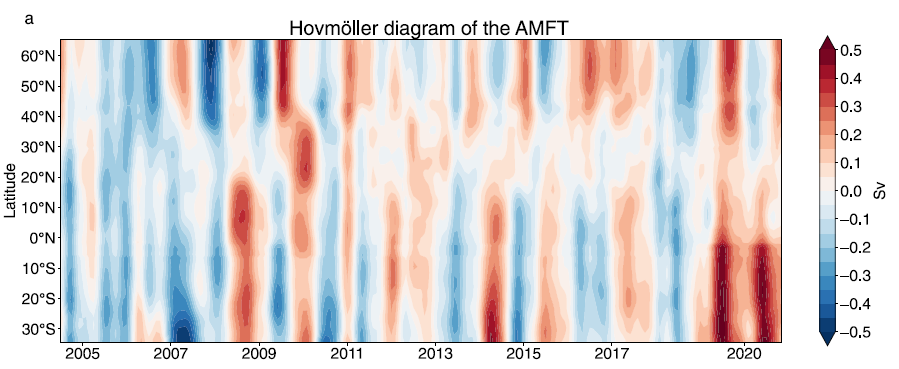
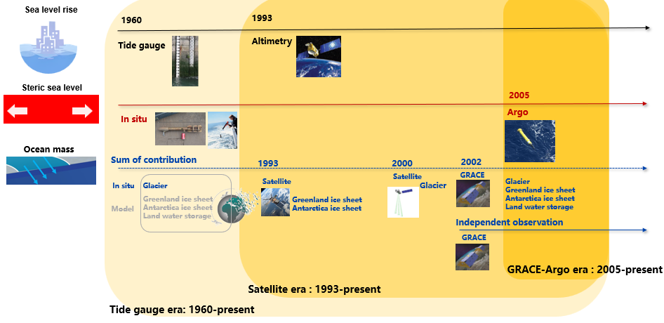

Research
North Atlantic heat and freshwater budgets
The ocean plays a crucial role in the climate system through its capacity to transport large amounts of heat and salt (or freshwater) across ocean basins. One of the most well-known examples is the Atlantic Meridional Overturning Circulation (AMOC). Recent advancements in transport-observing arrays, the widespread deployment of Argo floats, and satellite-based surface flux measurements have made it possible to better understand the role of transport in driving ocean heat and freshwater (or salt) changes.
In principle, changes in ocean heat and freshwater content should equal the combined contributions from transport convergence and surface fluxes. Based on the budget conservation, I reconstructed the Atlantic meridional freshwater transport across latitudes from 34.5°S to 66.5°N, and analyzed both its meridional coherence and its dependence on AMOC strength. The details of this work are presented in Zheng et al. (2024).
Nevertheless, achieving a fully closed budget remains challenging due to observational limitations. Current measurement systems cannot capture all aspects of variability, and the data are often affected by noise and instrumental drift. I am attempting to integrate multiple observational platforms and quantify the relative contributions to the budget gaps, thereby identifying which observing systems should be prioritized for future improvement. A manuscript on this work is in preparation.

Observation arrays in the North Atlantic

Reconstructed Atlantic meridional freshwater transport
Contemporary sea level budget
Global mean sea level (GMSL) rise poses a significant threat to coastal populations and ecosystems worldwide. Understanding the mechanisms driving GMSL change is essential for developing effective adaptation and mitigation strategies. Despite extensive research, notable discrepancies persist between observed GMSL changes and the sum of individual contributions.
We revisit the GMSL budget, incorporating recent corrections for observational biases and updated estimates of contributing processes, to better estimate GMSL trends and accelerations since 1960.
Results show that the GMSL trend has increased over time, with consistent acceleration observed across multiple periods (1960–2021, 1993–2023, and 2005–2023). While steric sea level changes have been the dominant driver of GMSL acceleration since 1960, the Greenland ice sheet has emerged as the primary contributor since 1993. Furthermore, the annual residual between observed GMSL and the sum of contributions has been reduced to within ±10 mm since 1960, and within ±5 mm since 2005.
This study narrows the gaps between observed GMSL and contributions, identifies key drivers of sea level acceleration, and highlights the importance of continued improvements in data processing and bias correction for accurate sea level estimate. The details of this work are presented in the slide below, and the manuscript is currently under review.

The contribution of global mean sea level rise

The history of sea level and related contribution observation